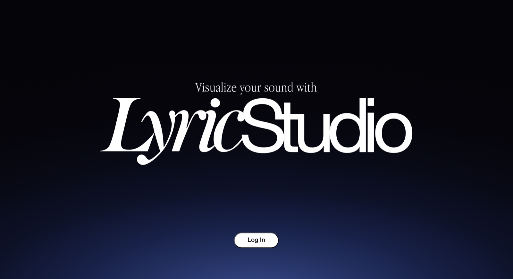
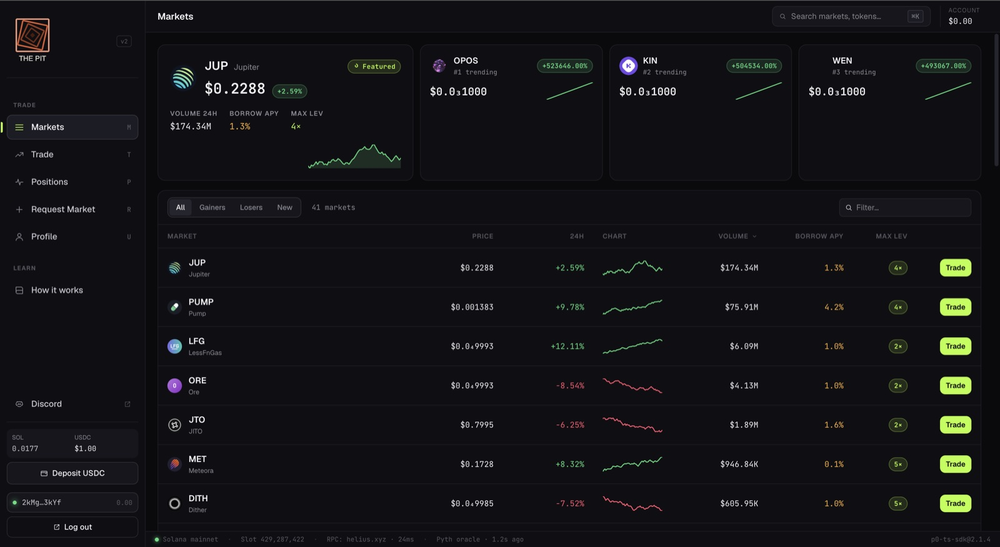
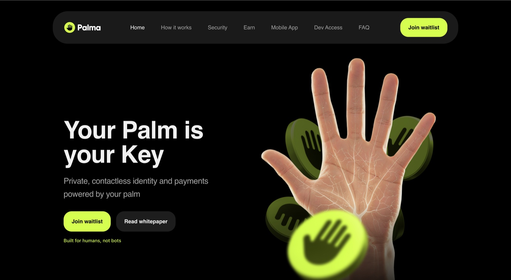
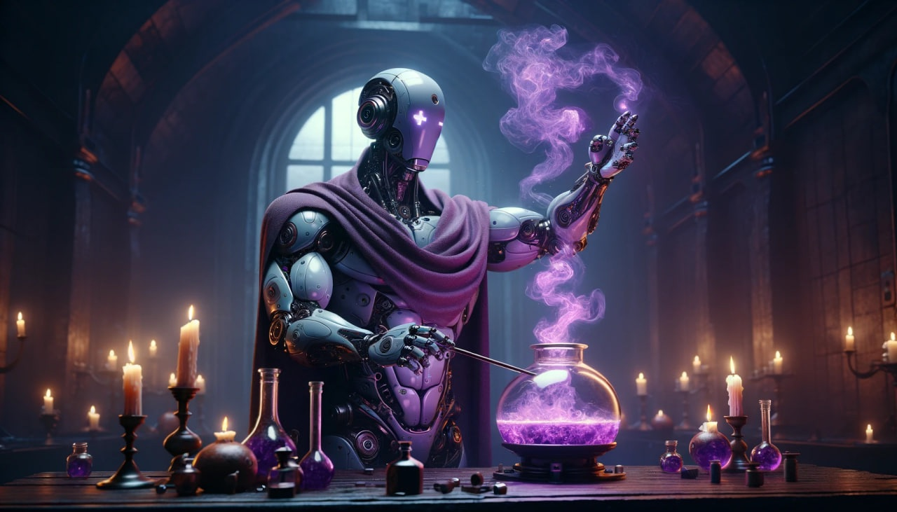

Building from AlmatyEssay · 3m
The default map of crypto has a few capitals — and Central Asia isn't usually on it. Distance from the center forces a kind of honesty. Solana made shipping from here practical: cheap, fast, global by default.
i'm aibar — a product manager who can build. a software engineer by training, shipping in web3, mostly on solana.
i don't write specs and walk away. i ship — from an on-chain perpetuals app to an ai studio for musicians.
currently building solana initiatives at Intebix and growing the ecosystem with Superteam Kazakhstan.
I've always been building startups — an on-chain perps app, AI motion-graphics studio for musicians, a proof-of-humanity protocol, a telegram trading bot. I'm technical enough to make product calls with engineers rather than around them, and I like being in the room where the building actually happens.
Open to what's next — a product, DevRel, or founding-team role where I can build and ship. Right now I'm doing RWA tokenization and a national stablecoin at Intebix, and growing the builder community across Central Asia with Superteam Kazakhstan.



